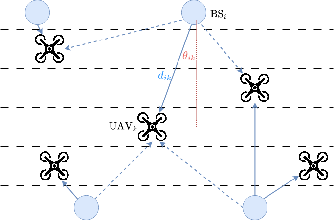
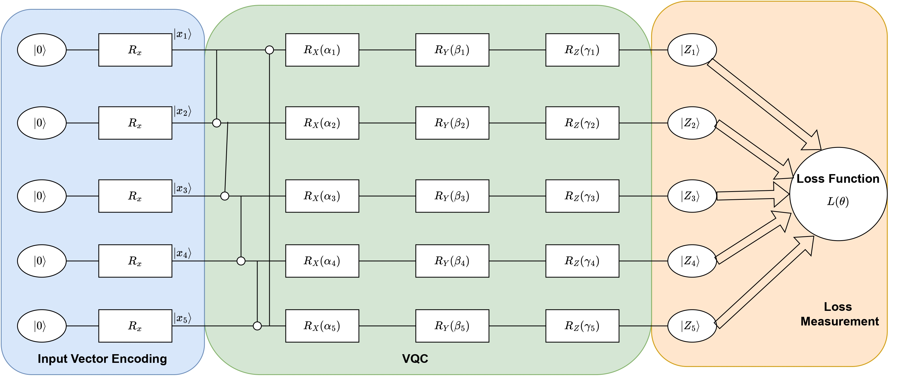

Projects
AI enabled Vehicular communication
Multi-Objective Reinforcement Learning
Quantum Computing
Autonomous Driving
Aerial/Terrestrial Vehicular Networks
Large Language Model
RF-Thz-HighwayEnv
 A Novel simulation testbed that emulates multi-band wireless network-enabled VNet RF-THz-Highway-Env based on HighwayEnv. This test environment not only inherits the advantages of autonomous driving, and lane changes on the highway, but also implements RF/THz channel propagation modeling, network selection, and HO control. A Novel simulation testbed that emulates multi-band wireless network-enabled VNet RF-THz-Highway-Env based on HighwayEnv. This test environment not only inherits the advantages of autonomous driving, and lane changes on the highway, but also implements RF/THz channel propagation modeling, network selection, and HO control. [read more]. |
Hybrid LLM-DDQN Optimization
 Large language models (LLMs) have received considerable interest recently due to their outstanding reasoning and comprehension capabilities.This work explores applying LLMs to vehicular networks, aiming to jointly optimize vehicle-to-infrastructure (V2I) communications and autonomous driving (AD) policies. Large language models (LLMs) have received considerable interest recently due to their outstanding reasoning and comprehension capabilities.This work explores applying LLMs to vehicular networks, aiming to jointly optimize vehicle-to-infrastructure (V2I) communications and autonomous driving (AD) policies. [read more]. |
UAVs Path Planning and Aerial Communication
| Simultaneously optimize the multi-UAV cell-association decisions and their moving speed decisions on a given 3D aerial highway. The objective is to improve both the transportation and communication performances, e.g., collisions, connectivity, and HOs. [read more]. |
Quantum Machine Learning
| We explore the integration of variational quantum circuits (VQCs) and Condition Value at Risk (CVaR) to optimize the kinematics and network connectivity of autonomous vehicles (AVs) under stochastic conditions, such as wireless channels and traffic dynamics. [read more]. |